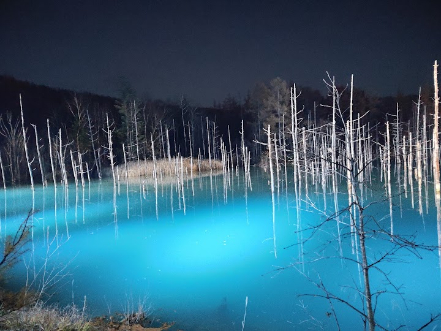
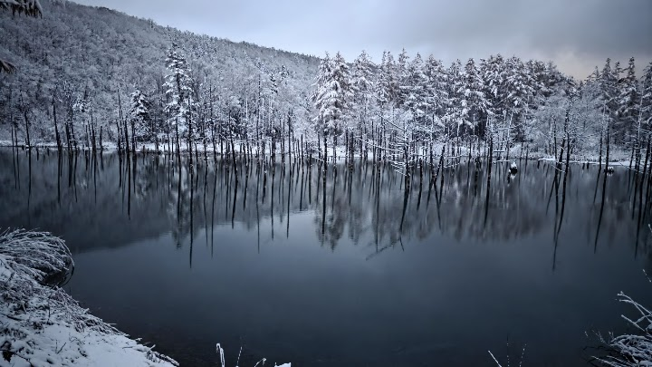
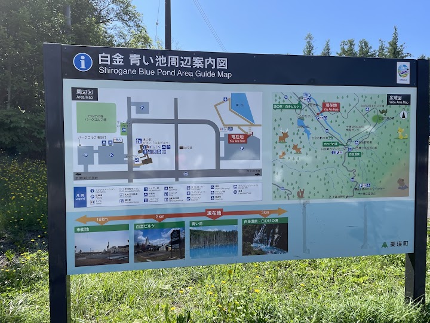
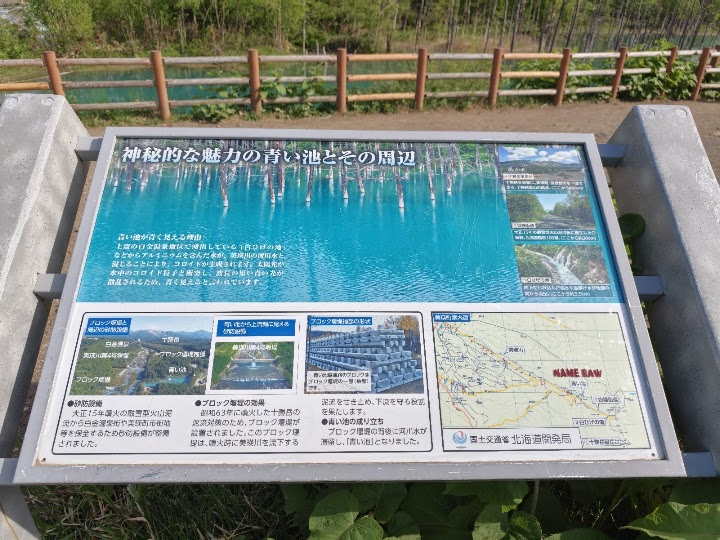
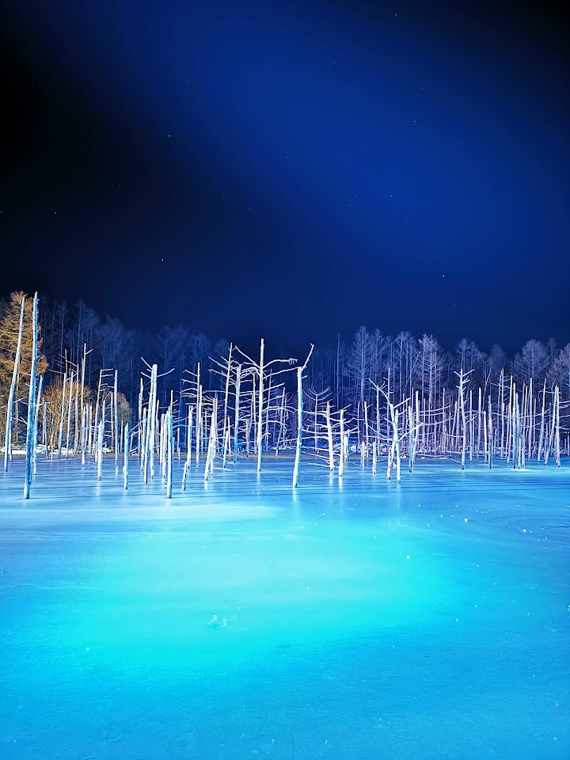

Shirogane Blue Pond (Aoiike)
Reachable by a short hike, this manmade pond draws nature lovers for its blue hue & tranquility.
Open in Google Maps (street view, more photos and reviews there)






Visitor tips on finding it and getting there
Visiting Shirogane Blue Pond (Aoiike) in Biei during our summer road trip across Hokkaido was an absolute bucket-list moment that surpassed every single expectation we had from seeing photos online. Located just a short drive from the nearby Shirahige Waterfall, pulling into the spacious and remarkably well-managed parking area was completely effortless, allowing us to hit the flat, tree-lined walking trail within minutes of parking our car. The moment the pond comes into view through the silver birch trees, the striking turquoise-blue color of the water is almost surreal, glowing with an othe
Be Careful of the carpark entry ticket fee. If you enter wrongly your ticket is 1000yen instead of 300yen. Remember to exchange at the entrance before paying. It’s a nice sight but full of tourist and probably 15mins will be enough. It’s very small, suggest you turn left, then walk all the way back towards right and end back at carpark. Proceed driving further up to waterfall.